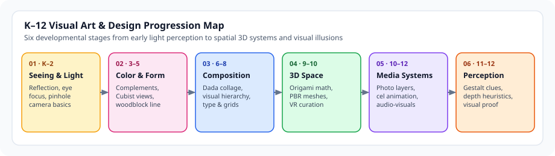

K–12 Learning Pathway · Visual Art & Design
Visual Art & Design
How we see, shape, and structure what people notice. Master the fundamentals of light, mathematical color harmonies, layout hierarchy, spatial paper engineering, and the neural mechanisms of visual perception.

Seeing & Light
Grades K–2Color & Visual Elements
Grades 3–5Color Theory Lab
Manipulate hue, saturation, and value in a digital color wheel. Master mathematical color harmonies and WCAG contrast ratios to guide the viewer’s eye.
Pioneer · Complementary ColorVincent van Gogh
See how Van Gogh juxtaposed complementary colors for maximum optical vibration and layered thick impasto textures in Starry Night and Sunflowers.
Pioneer · Multiple ViewpointsPablo Picasso
Explore how Cubism shattered centuries of single-point perspective, showing the front, profile, and top of objects simultaneously on a flat canvas.
Pioneer · Materials EngineeringCharles & Ray Eames
Discover how the legendary husband-and-wife duo bent thin plywood into compound curves to create ergonomic wartime splints and timeless furniture.
Pioneer · Video Art & MediaNam June Paik
Witness how the father of video art played televisions like musical instruments—bending cathode-ray beams with magnets and building video towers.
Pioneer · Intervalence Chemistry
Katsushika Hokusai
Explore woodblock printcraft, kento registration, synthetic Prussian blue chemistry, and the logarithmic spiral geometry of The Great Wave.
Composition & Layout
Grades 6–8Dadaism
See how WWI-era avant-garde artists subverted every classical compositional rule through readymades, photomontage, and chance operations.
Studio · Hierarchy · ScaleTypography Hierarchy Studio
Organize information visually using modular type scales, weight contrast, and spatial leading to direct readers through complex editorial layouts.
Depth, Perspective & 3D Space
Grades 9–10Origami: History, Math & Creations
Explore paper engineering, the seven Huzita axioms that solve cubic equations, flat-foldability theorems, space solar arrays, and an interactive 3D folding workbench.
Curation · 3D Spatial Systems
VR Website Research Proposal
Curate real-world artifacts, 3D GLB models, and primary sources to build accurate, human-scale learning environments for VR and desktop browsers.
Visual Systems & Media
Grades 10–12Photo Editing Workshop
Master raster pixel manipulation and non-destructive image workflows in Layer Lab: layer stacks, alpha masks, blend mode mathematics, and export formats.
Cross-Reference · Film & AnimationWalt Disney
How 24-frame persistence of vision and the multiplane camera's parallax depth transformed flat drawings into immersive animated landscapes.
Cross-Reference · Audio-Visual SystemsMusic Lab Studio
Connect visual waveforms to auditory frequencies with ADSR envelopes and modular synthesis to understand how sensory interfaces translate information.
Perception, Illusion & Immersion
Grades 11–12Thumbnail Artwork & Diagram Sources
Historical artworks, museum photography, and technical schematics appear directly on each pathway card with verified public-domain or open licenses:
- Camera Obscura Principle: 19th-century illustration · Public domain, Wikimedia Commons
- Eye Optics Diagram: Ibn al-Haytham, Opticae Thesaurus (1572) · Public domain
- Sunflowers (1888): Vincent van Gogh · Public domain, Wikimedia Commons
- Daniel-Henry Kahnweiler (1910): Pablo Picasso · Art Institute of Chicago · Public domain
- Eames LCW Plywood Chair: MAAT Lisbon exhibit · Photo: Jules Verne Times Two · CC BY-SA 2.0
- The More, the Better (1988): Nam June Paik · Photo: Republic of Korea (Korea.net) · CC BY-SA 4.0
- Under the Wave off Kanagawa: Katsushika Hokusai · The Met JP1847 · Public domain / CC0
- Merzbild 1A (1919): Kurt Schwitters · Public domain, Wikimedia Commons
- Kanizsa Triangle: Fibonacci · Wikimedia Commons · CC BY-SA 3.0
- Diagrams & Studio Plates: Color, Typography, Origami, Layer Stack, VR Pipeline, Multiplane Mountains, Music Lab · ClassroomOS (CC BY 4.0)